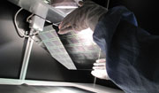
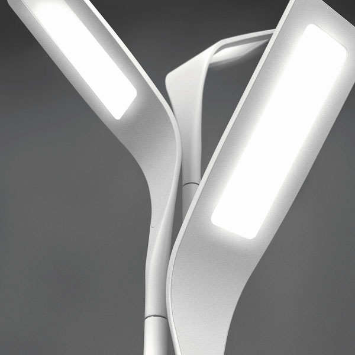
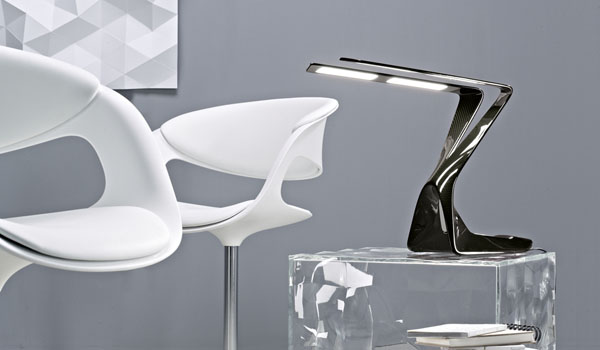
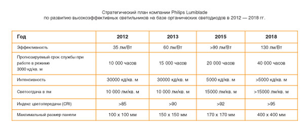

Немного об органических светодиодах
 Сверхновую технологию света ждет непростое будущее
Сверхновую технологию света ждет непростое будущее

Несмотря на активные инвестиции в производство органических светодиодов со стороны ведущих игроков рынка систем освещения, коммерчески реализуемые OLED-светильники пока еще остаются эксклюзивными предметами роскоши. Каковы же перспективы этой технологии и когда органические светодиоды станут столь же распространенными источниками света, как, к примеру, люминесцентные лампы? В ходе подготовки этой статьи мы постарались найти ответы на ключевые вопросы о развитии OLED-технологии в ближайшие 5 — 10 лет.
Природа органических светодиодов
Известно,
что органические светодиоды — это ультратонкие (толщиной не более 1,8
мм) источники света, которые генерируют свет по всей своей поверхности.
Органическими эти устройства называются потому, что их светоизлучающий
слой состоит из соединений углерода и водорода и в нем полностью
отсутствуют какие-либо другие химические вещества и металлы. Среди
достоинств органических светодиодов выделяют их способность излучать
мягкий, рассеянный свет, энергоэффективность и уникальный форм-фактор:
эти источники света могут изготавливаться как в виде жестких плоских
панелей, так и в виде гибких листов, визуально схожих с пленками. При
этом органические светодиоды могут излучать свет разного цвета (включая
белый), а в выключенном виде — быть почти полностью бесцветными и
прозрачными. В теории органические светодиоды способны через несколько
лет совершить революцию на рынке освещения и рекламы. Потенциально они
способны сократить потребление электроэнергии на 50% и при этом
выступать в роли основы для эффектных инсталляций, к примеру, прозрачных
витрин, которые превращаются в световые панно с наступлением темноты.
Более того, органические светодиоды на основе полимеров имеют большое
преимущество: такие источники света можно изготавливать путем печати.
Это (опять же, пока еще в теории) позволяет существенно сокращать
затраты на их изготовление и обеспечивает почти ничем не ограниченную
свободу в дизайне различных светильников и световых установок.
Все
это позволяет разработчикам OLED-технологии и экспертам индустрии света
предрекать перспективное и успешное будущее органическим светодиодам на
рынке светотехники в таких сегментах, как строительство, отделка
помещений, индустрия вывесок и световой рекламы, декоративное оформление
интерьеров и торговых залов. Однако есть все основания предполагать,
что это «светлое будущее» наступит еще не скоро.
Органические светодиоды сегодня
В
последние годы панели из органических светодиодов небольшого формата (в
пределах порядка 5 х 10 см) все чаще используются в производстве экранов
для мобильных телефонов и портативной электроники. Однако стоит
признать, что в индустрии света органические светодиоды пока еще главным
образом существуют в виде демонстрационных образцов или же встречаются
на рынке как источники света в эксклюзивных светильниках и торшерах
класса «люкс» стоимостью от 2 тыс. до 5 тыс. долларов США.
В
качестве примера можно привести недавнюю совместную разработку
международного химического концерна Solvay и независимого
исследовательского центра Holst, премьера которой состоялась в марте
текущего года. Это световые «плитки» из органических светодиодов
площадью 69 кв. см. Изделия получены путем нанесения нескольких слоев
органических светодиодов в виде раствора на стекло. Такой
производственный процесс делает более реалистичным использование
печатных технологий для изготовления органических светодиодов в
ближайшем будущем. Световые «плитки» Solvay и Holst обеспечивают
световую эффективность 30 лм/Вт при яркости 1000 кд/кв. м, что в два или
три раза больше, чем у обычных ламп накаливания.
В мае 2011 года
компания Philips инвестировала 40 млн евро в увеличение
производственных мощностей своего завода по выпуску органических
светодиодов в Аахене (Германия). Спустя год это направление деятельности
Philips до сих пор ограничивается производством OLED-панелей под
торговой маркой Philips Lumiblade, которые используются в эксклюзивных
интерьерных светильниках O'Leaf и Edge. По своей стоимости и доступности
эти изделия рассчитаны отнюдь не на массового покупателя.

Cветильник O'Leaf
Еще одной диковинкой на основе
органических светодиодов стал подвесной светильник PAD, разработанный
нью-йоркским художником-дизайнером Маркусом Тремонто в сотрудничестве с
компанией Novaled AG. Состоящая из прозрачных OLED-панелей люстра
работает в двух режимах: при включении нижняя поверхность светильника
излучает приятный белый свет, а верхняя — создающее особую атмосферу
освещение, переливающееся различными цветовыми комбинациями красного,
желтого и синего. В выключенном состоянии окружающий люстру свет
проходит через прозрачные OLED-панели, создавая на стенах цветные тени,
схожие с бликами, которые отбрасывает солнечный свет через стекла
витражей. Данная разработка отнюдь не позиционируется как товар
массового потребления, а создана специально, с тем чтобы привлечь больше
общественного внимания к возможностям и особенностям органических
светодиодов и повысить тем самым престиж OLED-технологии в целом. Другой
светильник на основе органических светодиодов, разработанный компанией
Novaled и получивший название Victory, позиционируется как
«профессиональная настольная лампа» и поставляется узким кругом
специализированных дилеров по цене около 5 тыс. евро. Главный
исполнительный директор Novaled Гильдас Сорин отмечает, что
OLED-освещение пойдет гораздо дальше этого первоначального сегмента, и
прогнозирует, что настоящий подъем рынка органических светодиодов
начнется в 2016 году.

Поскольку органические светодиоды пока еще остаются относительно юной, развивающейся технологией, существует широкий спектр материалов, которые в перспективе можно будет использовать в изготовлении гибких световых панелей. Поэтому разработчики OLED-технологии в настоящее время активно исследуют различные комбинации полимеров и их молекул, чтобы оптимизировать процесс изготовления органических светодиодов, сделать его максимально экономичным и производительным, а выпускаемые источники света — энергоэффективными и доступными по цене. По всей видимости, над решением этой задачи ученым и инженерам научно-исследовательских институтов и таких компаний, как Philips, Novaled, OSRAM и GE Ligthing, придется работать не один и не два года.
Туманные перспективы
Использование
органических светодиодов в дисплеях для мобильных телефонов и
портативных медиаплееров до сих пор остается единственной относительно
успешной областью применения этой инновационной технологии. Экраны в
таких устройствах используются лишь время от времени, а их владельцы с
готовностью покупают более функционально развитые и более современные
гаджеты каждые два-три года, если не чаще. Поэтому ограниченный срок
службы современных органических светодиодов и их умеренная яркость и не
расцениваются потребителями как недостаток. Судить же о скором появлении
OLED-панелей для световых рекламных инсталляций в торговых залах и под
открытым небом пока еще не приходится.
Когда же органические
светодиоды станут продуктом широкого потребления на рынке светотехники?
Зарубежные эксперты индустрии света полагают, что это произойдет не
раньше чем в 2010 - 2018 годах. При этом серьезную конкуренцию
органическим светодиодам уже составляет не менее многообещающая и широко
распространенная светодиодная технология, потенциал которой далеко не
исчерпан. По оценкам компании Nanomarkets, специализирующейся на
рыночных исследованиях, по итогам за 2011 год мировой рынок органических
светодиодов оценивался менее чем в 35 млн долларов США, в то время как
сегмент компактных люминесцентных ламп и сегмент светодиодов достигали
показателей в миллиарды долларов США каждый. Согласно планам компании
Philips, решения на основе светодиодов в 2020 году составят 75%
ассортимента выпускаемой компанией продукции. При этом, по оценкам
консалтинговой фирмы Digitimes Research (Тайвань), световая
эффективность обычных светодиодов возрастет до 243 лм/Вт к 2020 году, а
их стоимость будет снижаться ежегодно на 20% - 30%. Япония озвучивает
более амбициозные планы: в частности, Организация развития новых
энергетических и промышленных технологий Японии (NEDO) планирует уже в
2016 году сделать общепринятым стандартом для светодиодных ламп световую
эффективность в 200 лм/Вт.
ТАБЛИЦА:

Приведенный для сравнения в виде таблицы стратегический план развития OLED-технологии, утвержденный компанией Philips Lumiblade, показывает, что к 2016 году органические светодиоды будут по меньшей мере вдвое уступать обычным светодиодам по светоэффективности и вдвое-втрое — по сроку службы. Светодиодная технология, не только получившая повсеместное распространение в странах всего мира, но и успешно освоенная целым рядом заводов из Китая, в 2016 - 2020 годах продолжит свое развитие, опережая прогресс в OLED-разработках как минимум на 5 - 10 лет. Пока же органические светодиоды остаются многообещающей, но недостаточно зрелой технологией света, уступающей обычным светодиодам и по стоимости каждой генерируемой единицы света, и по ресурсу, и по энергоэффективности. Даже при самом благоприятном прогрессе в области органических светодиодов очевидно, что в 2016 - 2020 годах OLED-технология будет играть роль светотехники специального назначения, дополняющей основные, более распространенные и более эффективные в целом источники света.